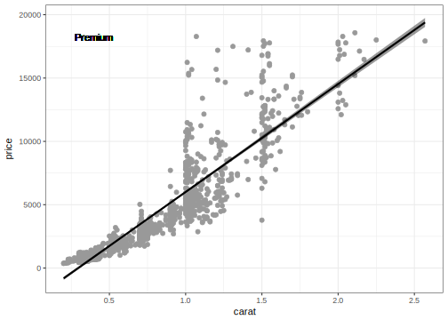

3.2 The *apply family
You have possibly heard of this family of functions and may have wondered what they are all about and how they differ from classic loop structures.
In this course we will familiarize ourselves with
apply()as well aslapply()andsapply().
First of all, we need to recognize that these structures are pretty much unique to R. The reason for this is that R is at its very core a so-called functional programming language. This means nothing else than “every operation in R is carried out by an appropriate function”. In fact, even the classical <- assignment operator is defined in the same way as any other function in R.
a <- 3
a## [1] 3"<-"(b, 15)
b## [1] 15"+"(a, b)## [1] 18You may wonder why this is relevant to understand *apply? Well, the one thing that all *apply functions have in common is that they are all so-called functionals that can take a function as an argument. Usually, these functionals take some object and some function as input and then apply the function to every entry of the object. The difference between the various *apply functions is basically the type of object they are designed for and hence each of these has slightly different requirements for the structure of the supplied function.
3.2.1 apply()
First, let’s have a look at apply(). It has three main arguments:
| Argument | Description |
|---|---|
X |
A matrix (or array) or ‘clean’ data.frame that can be coerced to a matrix, i.e. no mixture of classes in the columns (see example below). |
MARGIN |
An integer specifying whether to apply the supplied function across the rows (1) or columns (2). |
FUN |
The function to be applied. |
Other function-related arguments such as na.rm can also be supplied. Let’s try this:
## subset diamonds to only numerical columns
diamonds_num <- diamonds[, -c(2:4)]
## apply function mean to all columns of diamonds
col_means <- apply(diamonds_num, 2, mean, na.rm = TRUE)
col_means## carat depth table price x
## 0.7979397 61.7494049 57.4571839 3932.7997219 5.7311572
## y z
## 5.7345260 3.5387338
Task: apply sd to rows
Similar to the example above, calculate the standard deviation for each row of diamonds.

In R, apply() is the classical function to be used with data in matrix-like form to quickly iterate over one dimension (rows or columns). It is optimized for this kind of action and is much quicker than looping over rows or columns with for() loops which is the standard way in other languages such as Python or C++.
3.2.2 lapply() and sapply()
More powerful than apply() is lapply(). The ‘l’ stands for list and simply means that whatever is returned from an iterative process will be stored in a list. In R, lists are the most flexible way of storing things but their structure may need a little getting used to. Basically, you can store any combination of objects in lists. Matrices, for example, are much less versatile.
Let’s have a look at what these list objects look like:
lst <- list(1:10,
"Hello",
mean,
mean(1:10),
function(x) x + 1,
data.frame(col1 = rnorm(10), col2 = runif(10)),
matrix(1:9, 3, 3))
lst## [[1]]
## [1] 1 2 3 4 5 6 7 8 9 10
##
## [[2]]
## [1] "Hello"
##
## [[3]]
## function (x, ...)
## standardGeneric("mean")
## <environment: 0x0000000004e72c50>
## attr(,"generic")
## [1] "mean"
## attr(,"generic")attr(,"package")
## [1] "base"
## attr(,"package")
## [1] "base"
## attr(,"group")
## list()
## attr(,"valueClass")
## character(0)
## attr(,"signature")
## [1] "x"
## attr(,"default")
## Method Definition (Class "derivedDefaultMethod"):
##
## function (x, ...)
## UseMethod("mean")
## <bytecode: 0x0000000004e9d008>
## <environment: namespace:base>
##
## Signatures:
## x
## target "ANY"
## defined "ANY"
## attr(,"skeleton")
## (function (x, ...)
## UseMethod("mean"))(x, ...)
## attr(,"class")
## [1] "standardGeneric"
## attr(,"class")attr(,"package")
## [1] "methods"
##
## [[4]]
## [1] 5.5
##
## [[5]]
## function (x)
## x + 1
## <environment: 0x000000002e36b488>
##
## [[6]]
## col1 col2
## 1 -0.06285000 0.6071539
## 2 -0.94548327 0.2171210
## 3 -0.45460562 0.3913435
## 4 -0.81519648 0.7245288
## 5 1.56819163 0.8119677
## 6 0.37902423 0.5936339
## 7 1.67091219 0.6219313
## 8 -0.06446247 0.1376078
## 9 -0.59308771 0.2528668
## 10 0.48095465 0.5529387
##
## [[7]]
## [,1] [,2] [,3]
## [1,] 1 4 7
## [2,] 2 5 8
## [3,] 3 6 9As you can see we can combine any odd type of objects. Note how each list entry is numbered. We could have supplied names as well, but it is less common to do so if your list is the result of an interative procedure. And accessing lists via their numbered entries is quite straightforward, yet a little different from the classical $ notation of data frames. To ‘navigate’ to one of the entries we need to use double square brackets [[x]]. This is important as this will be the notion we need to keep in mind when iterating over lists.
lapply() can basically be used just like a for() loop, though the semantics are a little different. The two main differences are:
- We can store the whole result of the
lapply()call in an object (alist), and - we need to write the bit that does the calculation part as a function.
So, if we were to recreate the first example from the previous chapter on for() loops:
result <- lapply(1:5, function(i) i)
result## [[1]]
## [1] 1
##
## [[2]]
## [1] 2
##
## [[3]]
## [1] 3
##
## [[4]]
## [1] 4
##
## [[5]]
## [1] 5The only time we will use sapply() in this tutorial is right here. sapply() and lapply() are very similar, so that it is sufficient to cover only one in detail. The ‘s’ stands for ‘simplify’ which means that sapply() will try to return an object of simple structure, such as a vector or a matrix.
Let’s repeat the above with sapply():
result <- sapply(1:5, function(i) i)
result## [1] 1 2 3 4 5Getting a vector as a result is great if the calculation produces a vector, however, this won’t work if the result is e.g. a function, a ggplot2 object or something along those lines. Therefore, lapply() is simply the more versatile of the two as it can handle any type of result.
To highlight this, let’s use lapply() to read in the numerous chunks of data we have previously saved.
fls <- list.files("results", pattern = glob2rx("*subset*.csv"),
full.names = TRUE)
dat_lst <- lapply(seq(fls), function(i) {
read.csv(fls[i])
})
str(dat_lst, 1)## List of 27
## $ :'data.frame': 2000 obs. of 10 variables:
## $ :'data.frame': 2000 obs. of 10 variables:
## $ :'data.frame': 2000 obs. of 10 variables:
## $ :'data.frame': 2000 obs. of 10 variables:
## $ :'data.frame': 2000 obs. of 10 variables:
## $ :'data.frame': 2000 obs. of 10 variables:
## $ :'data.frame': 2000 obs. of 10 variables:
## $ :'data.frame': 2000 obs. of 10 variables:
## $ :'data.frame': 2000 obs. of 10 variables:
## $ :'data.frame': 2000 obs. of 10 variables:
## $ :'data.frame': 2000 obs. of 10 variables:
## $ :'data.frame': 2000 obs. of 10 variables:
## $ :'data.frame': 2000 obs. of 10 variables:
## $ :'data.frame': 2000 obs. of 10 variables:
## $ :'data.frame': 2000 obs. of 10 variables:
## $ :'data.frame': 2000 obs. of 10 variables:
## $ :'data.frame': 2000 obs. of 10 variables:
## $ :'data.frame': 2000 obs. of 10 variables:
## $ :'data.frame': 2000 obs. of 10 variables:
## $ :'data.frame': 2000 obs. of 10 variables:
## $ :'data.frame': 2000 obs. of 10 variables:
## $ :'data.frame': 2000 obs. of 10 variables:
## $ :'data.frame': 2000 obs. of 10 variables:
## $ :'data.frame': 2000 obs. of 10 variables:
## $ :'data.frame': 2000 obs. of 10 variables:
## $ :'data.frame': 2000 obs. of 10 variables:
## $ :'data.frame': 1940 obs. of 10 variables:Great, you might say, but now we have a list of multiple data frames instead of one complete data frame. In our case this seems rather silly, but think about situations where you want to analyze the same sort of data only from different dates or different locations or patients or … – you probably get the idea.
Also, recombining these individual data frames back into one is straightforward.
diamonds_df <- do.call("rbind", dat_lst)
str(diamonds_df)## 'data.frame': 53940 obs. of 10 variables:
## $ carat : num 0.23 0.21 0.23 0.29 0.31 0.24 0.24 0.26 0.22 0.23 ...
## $ cut : Factor w/ 5 levels "Fair","Good",..: 3 4 2 4 2 5 5 5 1 5 ...
## $ color : Factor w/ 7 levels "D","E","F","G",..: 2 2 2 6 7 7 6 5 2 5 ...
## $ clarity: Factor w/ 8 levels "I1","IF","SI1",..: 4 3 5 6 4 8 7 3 6 5 ...
## $ depth : num 61.5 59.8 56.9 62.4 63.3 62.8 62.3 61.9 65.1 59.4 ...
## $ table : num 55 61 65 58 58 57 57 55 61 61 ...
## $ price : int 326 326 327 334 335 336 336 337 337 338 ...
## $ x : num 3.95 3.89 4.05 4.2 4.34 3.94 3.95 4.07 3.87 4 ...
## $ y : num 3.98 3.84 4.07 4.23 4.35 3.96 3.98 4.11 3.78 4.05 ...
## $ z : num 2.43 2.31 2.31 2.63 2.75 2.48 2.47 2.53 2.49 2.39 ...Fianlly, let’s look at a slightly more involved example of how to use lapply(). A standard analysis workflow likely involves some sort of statistical analysis and the visualization of the results. Here, we will create linear models between ‘carat’ and ‘price’ and the corresponding scatter plots for all levels of ‘cut’, but only for those diamonds of ‘color = D’.
## split diamonds by cut
cut_lst <- split(diamonds, f = diamonds$cut)
my_result_list <- lapply(seq(cut_lst), function(i) {
## subset to color = D
dat <- cut_lst[[i]]
dat_d <- subset(dat, dat$color == "D")
## calculate linear model
lm1 <- lm(price ~ carat, data = dat_d)
## create scatterplot
scatter_ggplot <- ggplot(aes(x = carat, y = price), data = dat_d)
g_sc <- scatter_ggplot +
geom_point(colour = "grey60") +
theme_bw() +
stat_smooth(method = "lm", se = TRUE,
fill = "black", colour = "black") +
geom_text(data = NULL,
x = min(dat_d$carat, na.rm = TRUE) + 0.2,
y = max(dat_d$price, na.rm = TRUE) * 0.98,
label = unique(dat_d$cut))
## return both the linear model and the plot as a list
return(list(linmod = lm1,
plt = g_sc))
})
## set names of list for clarity
names(my_result_list) <- names(cut_lst)
str(my_result_list, 2)## List of 5
## $ Fair :List of 2
## ..$ linmod:List of 12
## .. ..- attr(*, "class")= chr "lm"
## ..$ plt :List of 9
## .. ..- attr(*, "class")= chr [1:2] "gg" "ggplot"
## $ Good :List of 2
## ..$ linmod:List of 12
## .. ..- attr(*, "class")= chr "lm"
## ..$ plt :List of 9
## .. ..- attr(*, "class")= chr [1:2] "gg" "ggplot"
## $ Very Good:List of 2
## ..$ linmod:List of 12
## .. ..- attr(*, "class")= chr "lm"
## ..$ plt :List of 9
## .. ..- attr(*, "class")= chr [1:2] "gg" "ggplot"
## $ Premium :List of 2
## ..$ linmod:List of 12
## .. ..- attr(*, "class")= chr "lm"
## ..$ plt :List of 9
## .. ..- attr(*, "class")= chr [1:2] "gg" "ggplot"
## $ Ideal :List of 2
## ..$ linmod:List of 12
## .. ..- attr(*, "class")= chr "lm"
## ..$ plt :List of 9
## .. ..- attr(*, "class")= chr [1:2] "gg" "ggplot"This lets us now quickly access each of the analyses individually. To view the scatter plot for diamonds of ‘cut = Premium’, we simply navigate down to the respective entry:
my_result_list$Premium$plt
Note that we can now use the common $ notation for the navigation given that we have set the names for the resulting lists. We can, however, still navigate using double square brackets ([[]]). To get the summary of the linear model for ‘cut = Ideal’:
summary(my_result_list[[5]][[1]])##
## Call:
## lm(formula = price ~ carat, data = dat_d)
##
## Residuals:
## Min 1Q Median 3Q Max
## -9239.6 -611.1 -38.9 419.5 10759.7
##
## Coefficients:
## Estimate Std. Error t value Pr(>|t|)
## (Intercept) -2490.89 51.89 -48.01 <2e-16 ***
## carat 9049.65 81.06 111.64 <2e-16 ***
## ---
## Signif. codes: 0 '***' 0.001 '**' 0.01 '*' 0.05 '.' 0.1 ' ' 1
##
## Residual standard error: 1292 on 2832 degrees of freedom
## Multiple R-squared: 0.8148, Adjusted R-squared: 0.8148
## F-statistic: 1.246e+04 on 1 and 2832 DF, p-value: < 2.2e-16I hope this highlights how useful and flexible lapply() can be. Another scenario that is quite common is to carry out different calculations on the same set of data. This can easily be done using lapply() by iterating over the different functions and calling them on the same data set within the lapply() loop.